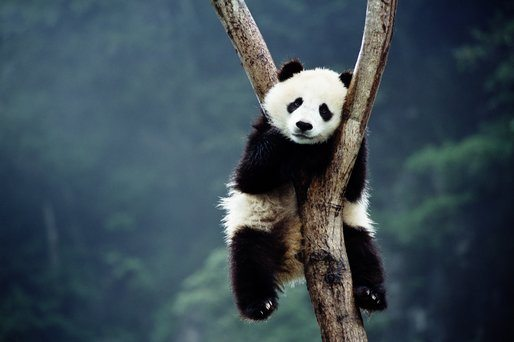

Facts About Pandas
- Giant pandas (often referred to as simply “pandas”) are black and white bears. In the wild, they are found in thick bamboo forests, high up in the mountains of central China – you can check out our cool facts about China, here!
- These magnificent mammals are omnivores. But whilst pandas will occasionally eat small animals and fish, bamboo counts for 99 percent of their diet.
- Pandas are BIG eaters – every day they fill their tummies for up to 12 hours, shifting up to 12 kilograms of bamboo!